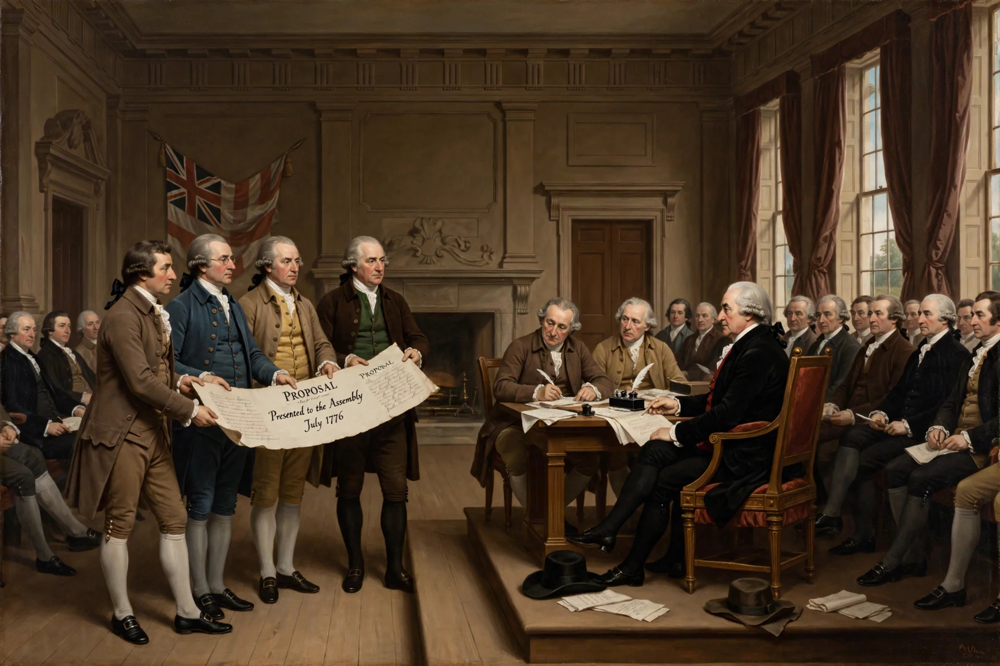

From Wikipedia, the free encyclopedia
| Committee of Five | |
|---|---|
| Formed | June 11, 1776 |
| Appointed by | Second Continental Congress |
| Members | Thomas Jefferson, John Adams, Benjamin Franklin, Roger Sherman, Robert R. Livingston |
| Task | Draft the United States Declaration of Independence |
| Delivered | June 28, 1776 |

The Committee of Five was a committee appointed by the Second Continental Congress on June 11, 1776, to draft a formal statement of the reasons for declaring independence from Great Britain. Its five members were Thomas Jefferson of Virginia, John Adams of Massachusetts, Benjamin Franklin of Pennsylvania, Roger Sherman of Connecticut, and Robert R. Livingston of New York.
The committee assigned the actual drafting chiefly to Jefferson, whose literary reputation and status as a Virginian made him a natural choice; Adams declined to write it himself and later described persuading Jefferson to take the task. Jefferson composed the draft in roughly two weeks in June 1776, consulting the other members, and Franklin and Adams made small editorial changes—Franklin, for instance, is credited with altering "sacred and undeniable" to "self-evident" in the preamble.
The committee presented its draft to Congress on June 28, 1776. Congress first voted on the Lee Resolution for independence on July 2, then debated and edited the Declaration text over the following two days, cutting about a quarter of Jefferson's draft—including a passage condemning the slave trade—before adopting it on July 4, 1776.
John Trumbull's famous painting of the signing scene actually depicts the committee presenting its work to Congress, and that image appears on the reverse of the United States two-dollar bill. Robert Livingston, though a member, never signed the Declaration, having been recalled to New York before the signing.